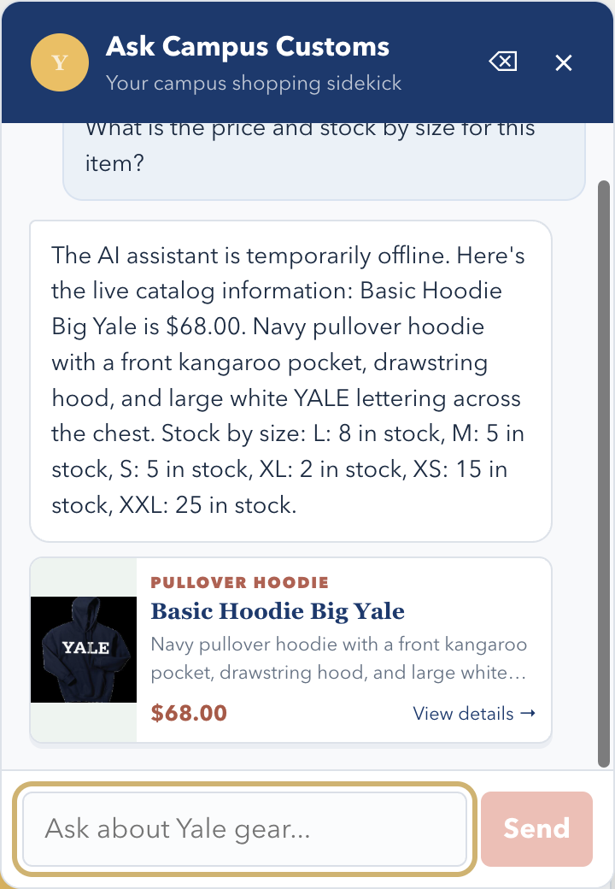
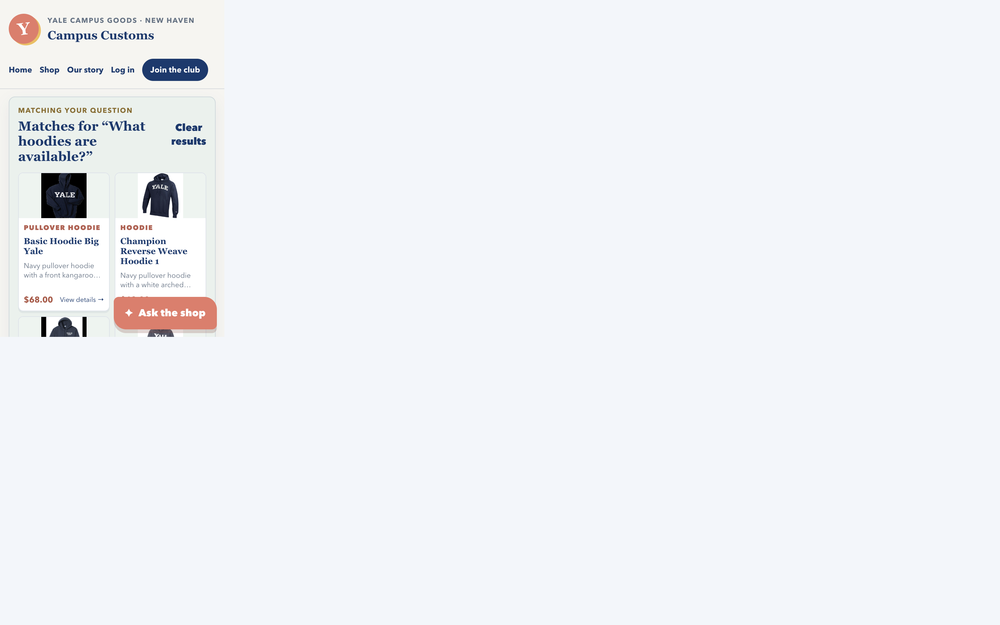
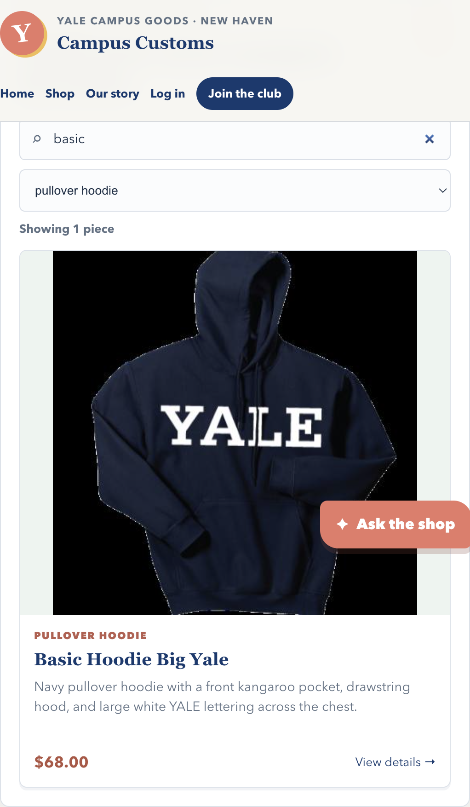

Browser captures from the running Vite storefront and FastAPI service.
1. Viewed product price and size stock

The shopper asks about “this item” while viewing Basic Hoodie Big Yale; the reply gives the SQLite price ($68.00) and exact quantities for L, M, S, XL, XS, and XXL. Portkey DNS was unavailable during this live check, so the interface explicitly used its database-backed fallback rather than presenting it as a model-generated answer.
2. Dynamic hoodie matches

After the shopper asks “What hoodies are available?”, the live catalog returns four matching cards on the page. Each card is built from the structured API response and opens the same full product detail route as a catalog card.
3. Catalog search and type filter

The shopper combines a text search with the garment-type filter to narrow the catalog to Basic Hoodie Big Yale. The result count and product card update immediately, making the collection faster to scan.